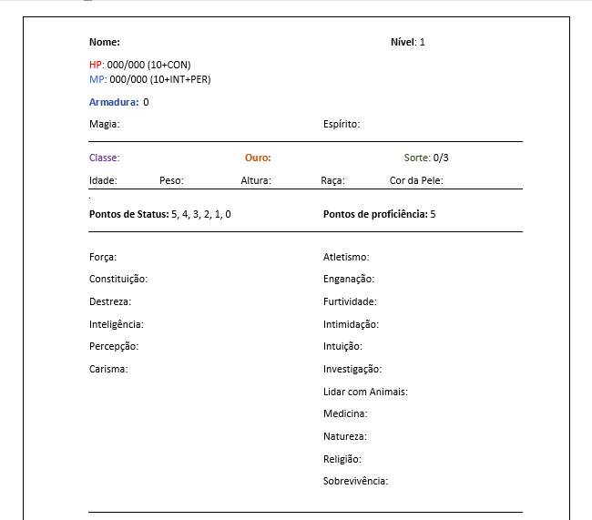

Como funciona o Sistema de RPG do TnA
O sistema é bem simples, HP representa a vida o MP que seria a energia serve tanto para Magia quanto para Espirito. A armadura é como uma vida extra, o dano levado é descontado nela. A magia e o espirito seriam os poderes. Você pode ter os dois ou nenhum. O ouro é decidio na dependendo de sua classe e a sorte é dada pelo mestre. Os status e a proficiencia possuem pontos que são recebeido sempre que upar de nível.
